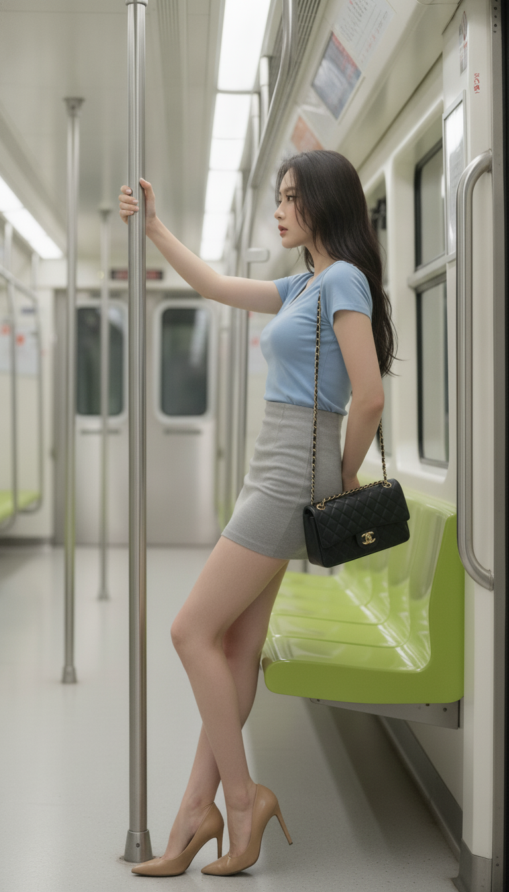
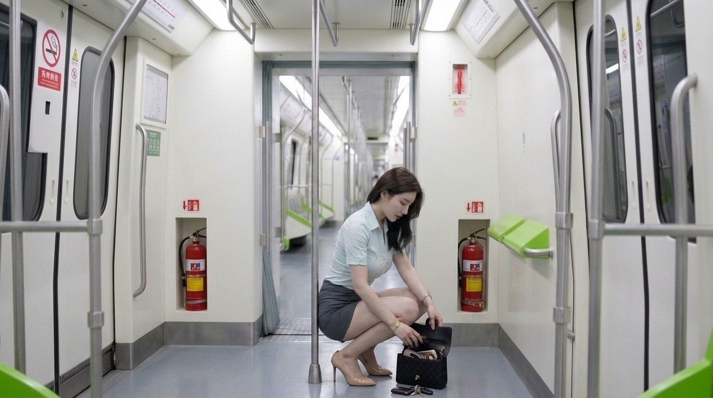
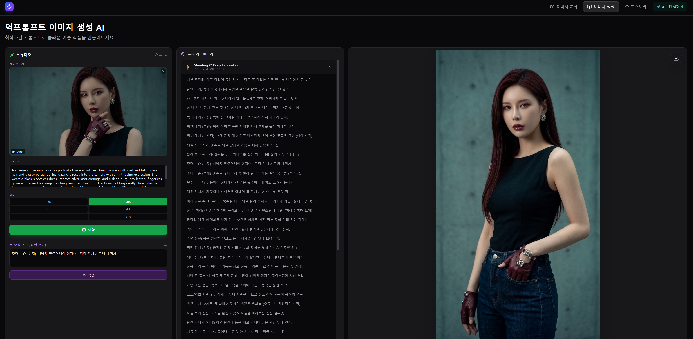

ORIGINAL
01
원본 이미지인물과 스타일을 분석합니다
한 장의 이미지에서 정교한 프롬프트를 추출하고, 포즈와 장면을 자유롭게 바꿔 새로운 작품을 완성하세요.
내 키는 내 브라우저에서버에 영구 저장하지 않아요
설치 없이 바로웹에서 간편하게 시작해요
POSE Standing & Body Proportion
SCENE Cinematic subway interior

AI 프롬프트 분석 완료장면 · 조명 · 구도 · 스타일
✓하나의 이미지로 시작하는 새로운 크리에이티브 워크플로
ONE SOURCE, NEW STORIES
원본의 특징을 분석한 뒤 원하는 포즈와 상황을 더해 새로운 이미지로 재구성합니다.
원본 이미지인물과 스타일을 분석합니다

AI GENERATED새로운 지하철 장면프롬프트로 다시 구성한 결과입니다
A COMPLETE AI STUDIO
구도, 조명, 인물, 의상과 분위기를 읽어 재사용 가능한 프롬프트로 정리합니다.
미리 준비된 포즈를 고르거나 원하는 장면을 직접 적어 생성 방향을 세밀하게 조정합니다.
사용자가 선택한 AI 모델과 개인 API 키로 이미지를 분석하고 새로운 작품을 생성합니다.
분석하고 싶은 참고 이미지를 한 장 선택합니다.
추천 목록에서 고르거나 원하는 상황을 직접 입력합니다.
AI가 최적화한 프롬프트로 변환 결과를 만들고 저장합니다.
